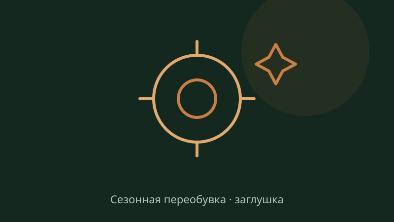
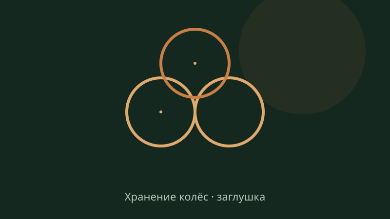
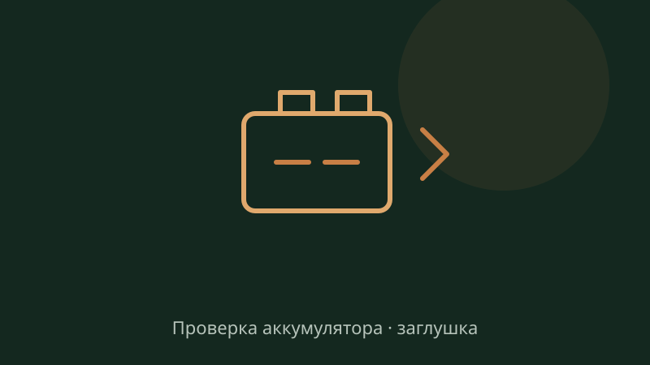
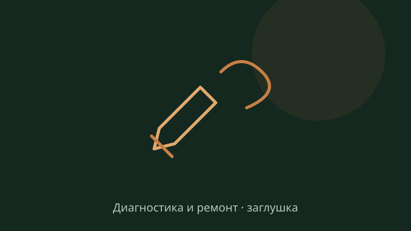

Когда менять шины: правило +7 °C
Среднесуточная температура держится около +7 °C — пора записываться на переобувку. Объясняем, почему не стоит ждать первого снега.
ЧитатьПишем о том, что помогает водителям: когда переобуваться, что делать с грыжей, как готовить электрику к зиме. Даты и статьи в мокапе демонстрационные — в продакшне раздел ведёт владелец из админки.

Среднесуточная температура держится около +7 °C — пора записываться на переобувку. Объясняем, почему не стоит ждать первого снега.
Читать
Первый мороз проверяет батарею на прочность. Простой чек-лист, который спасает от «не заводится» январским утром.
Читать
Как хранить комплект до следующего сезона, чтобы резина не потрескалась и не потеряла форму. И зачем отдавать хранение сервису.
Читать
В пик сезона живая очередь съедает час-полтора. Форма записи решает проблему: выбираете день и час — к приезду бокс свободен.
ЧитатьВздутие на боковине — не косметический дефект. Разбираем, когда можно доехать до сервиса самому, а когда шину лучше не нагружать.
ЧитатьШесть симптомов, с которыми не стоит ездить «ещё месяц»: от стука в подвеске до горящего «чека».
ЧитатьМашину тянет в сторону, резина изнашивается «ступеньками»? Рассказываем, когда нужен развал и чем опасно откладывание.
ЧитатьКоммерческий транспорт не может позволить себе простой. Про грузовые колёса и планирование визита парка.
ЧитатьКак только появится новая статья — она будет здесь. Это пустое состояние — часть демо.
Оператор: ИП Яковенко Павел Иванович, ИНН 341010400388. Адрес для обращений: Ростов-на-Дону, ул. Портовая, 439. Тел. +7 (928) 906-57-00, e-mail avtotehservis439@mail.ru.
Какие данные собираем: имя, телефон, сведения об автомобиле (марка, модель, год, VIN, пробег), выбранные услуги, желаемые дата и время, содержание сообщения, прикреплённые фото.
Зачем: чтобы связаться с вами, согласовать перечень работ и стоимость до начала ремонта, записать на визит.
Как храним: данные хранятся на серверах в Российской Федерации, доступ — только у сотрудников сервиса. Срок хранения — до достижения цели обработки либо до отзыва согласия.
Отзыв согласия: по телефону или на e-mail — прекратим обработку и удалим данные, если их хранение больше не требуется законом.
Это демонстрационный текст для мокапа. Перед запуском сайта политику нужно утвердить у владельца и привести в соответствие 152-ФЗ (с учётом изменений, действующих с 01.09.2025).
Нажимая кнопку отправки формы, я свободно, своей волей и в своём интересе даю согласие ИП Яковенко Павел Иванович (ИНН 341010400388) на обработку моих персональных данных:
Обработка включает сбор, запись, хранение, использование и передачу сотрудникам сервиса для выполнения заявки. Согласие можно отозвать в любой момент — по телефону +7 (928) 906-57-00 или письмом на avtotehservis439@mail.ru.
Демо-мокап: форма ничего не отправляет и данные не собирает.